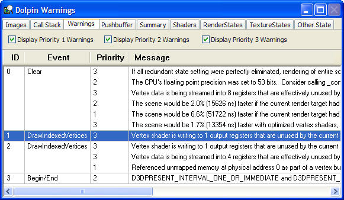

As PIX analyzes the data, it may determine that something is being done that is costing performance. Warning information will be displayed in this window on a per-event basis.

The check boxes enable the user to determine which warnings to display based on the priority.
Moving through the timeline, either in the Timeline window or in the Events window, updates the Warnings window to reflect the current point in the timeline. Similarily, clicking on an event in the Warnings window causes the other windows to update.